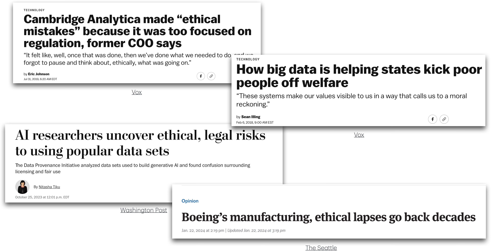
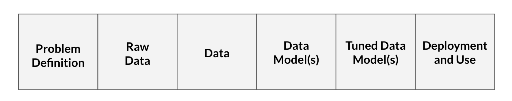

Data science ethics
Mar 31, 2026
Announcements
HW 04 due TODAY at 11:59pm
Project: Preliminary analysis due April 7
Statistics experience due April 15
Application exercise
Cross validation for logistic regression
Data science ethics
When things go wrong

Gap in public trust

“…coverage of polls [statistics] often does not adequately convey the many decisions that pollsters [statisticians] must make … as well as the potential consequences of those decisions”
“Ideal objectivity?”
- SRTL SLIDES
Processes in data science

- Problem definition: Question we wish to answer with data
- What is the likelihood a customer purchases product S?
- Our model (built on training data) is successful if it achieves at least 75% accuracy on testing data
Processes in data science
- Raw data: Information collected by interacting with the world
- Information from each time the customer clicks on an advertisement for product S
- Includes timestamps for each advertisement interaction and the customer’s demographic information
Processes in data science
- Data: Processed form of raw data
- Data table where each row represents a unique customer and the columns are the variables that describe that customer
- Includes information from raw data and engineered variables (e.g., average time between clicks)
- We decide what to do with missing data
Processes in data science
- Data model(s): Product from running input data through learning algorithm (generalize the relationship between variables in the data)
We choose a logistic regression model of the form
\[ \begin{aligned} \log(\frac{\pi}{1-\pi}) = \beta_0 &+ \beta_1 ~ \text{age} \\ &+ \beta_2 ~ \text{number clicks}\\ & + \beta_3 ~ \text{avg time between clicks} \end{aligned} \]
Processes in data science
- Tuned data model(s): Data model in which the parameters are adjusted
- Use 5-fold cross validation to determine which variables to include in order to improve model’s accuracy
Processes in data science
- Deployment and usage: Generating predictions (or other output) from the tuned model
- Determine that the model should only be used for customers under a certain age
- Determine only data scientists at the company selling product S should be able to access model and sell products from it
Your data science process

Source: Figure 2 of Colando and Hardin (2024)
What are some decisions you have made in your project (or other data analysis work)?
What is data science ethics?
Data science ethics studies and evaluates moral problems related to:
Data: generation, recording, process, dissemination, and sharing
Algorithms: artificial intelligence, machine learning, large language models, and statistical learning models
Corresponding practices: responsible innovation, programming, hacking, professional code
Hardin paper, Floridi and Taddeo (2016)
Topics in data science ethics
[get from reading list. See the list for more details]
Why is data science ethics important?
commonly held belief that mathematics, and statistics, is “objective”, not influenced by practitioner’s moral values,
In the age of “big data”, high stakes decisions are being made based on data and statistics
Show the article about the woman from Tennessee who was in jail due to facial recognition software.
child welfare example:
“Critics worry that delegating some of that critical work to AI tools powered by data collected largely from people who are poor can bake in discrimination against families based on race, income, disabilities or other external characteristics.”
“Using a trove of detailed personal data and birth, Medicaid, substance abuse, mental health, jail and probation records, among other government data sets, the Allegheny tool’s statistical calculations help social workers decide which families should be investigated for neglect – a nuanced term that can include everything from inadequate housing to poor hygiene, but is a different category from physical or sexual abuse, which is investigated separately in Pennsylvania and is not subject to the algorithm.”
“Allegheny’s algorithm, in use since 2016, has at times drawn from data related to Supplemental Security Income as well as diagnoses for mental, behavioral and neurodevelopmental disorders, including schizophrenia or mood disorders, AP found”
Responsibility
responsibility in how data are handled and stored
- decisions about data handling and implications of those decisions
responsibility in clear model documentation and how the a model should be used
using algorithm that produces biased results (Amazon example)
Question - What are the implications of dropping observations with missing values?
These are from hardin article.
Importance of transparency
ethical expectation that data models are understandable to human stakeholders is often referred to the “right to an explanation”.
- This is found in European Unions General Data Protection Regulation (GDPR)
Durham ShotSpotter example.
Maybe look at some of the community feedback versus the results.
quote the website that says “sophisticated machine learning”
Ethics codes from different organization
Principles to guide ethical action
From MSDR: https://mdsr-book.github.io/mdsr3e/08-ethics.html#some-principles-to-guide-ethical-action
example
- blue hair green shirt eample
example
- Talking about using race as a predictor in a model
-https://slate.com/technology/2016/02/how-to-bring-better-ethics-to-data-science.html
Add something about considersations of race.
Case study 1
Problem 8 (Medium): A data analyst received permission to post a data set that was scraped from a social media site. The full data set included name, screen name, email address, geographic location, IP (internet protocol) address, demographic profiles, and preferences for relationships. Why might it be problematic to post a deidentified form of this data set where name and email address were removed?
From Modern Data Science with R (https://mdsr-book.github.io/mdsr3e/08-ethics.html#ethics-online-exercises)
Case study 2
A company uses a machine-learning algorithm to determine which job advertisement to display for users searching for technology jobs. Based on past results, the algorithm tends to display lower-paying jobs for women than for men (after controlling for other characteristics than gender). What ethical considerations might be considered when reviewing this algorithm?
From Modern Data Science with R (https://mdsr-book.github.io/mdsr3e/08-ethics.html#ethics-online-exercises)
Further reading
Chapter 8 - Modern Data Science with R
When things go wrong examples:
Next class
Special topic: Causal inference
Complete Lecture 21 prepare